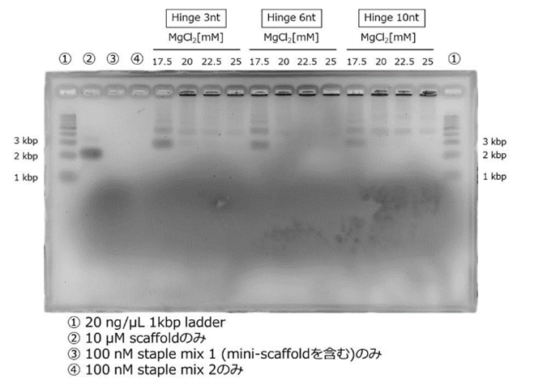
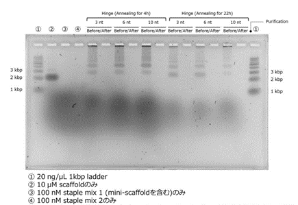
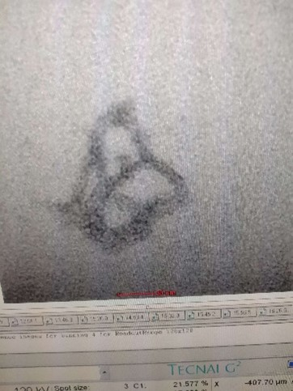
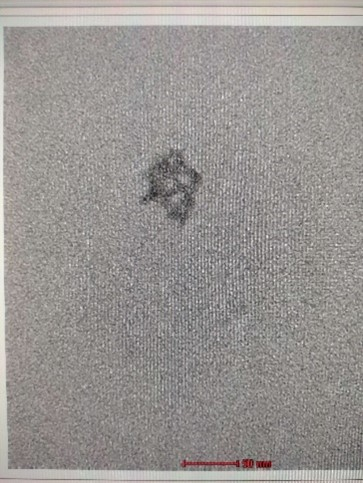

我々の構造は初期状態として菱形十二面体をとる。これは変形の中間体として捉えることができ、まずはこの構造が生成されることを確認した。また、ここで生成プロトコルの最適化を目指した。より具体的には、構造体のバンドルを繋ぐヒンジ3種類×MgCl2濃度5種類×アニーリングプロトコル2種類の条件で構造を生成したのち、収量の多いものを限外ろ過によって精製し、得られたサンプルをTEMで観察した。
Fig.1に条件ごとの電気泳動結果を示す。

Fig.1 各条件での中間体の生成
左が4hアニーリング、右が22hアニーリング
Scaffoldの位置より、3kbp付近に見られるのが目的の構造体のバンドだと考えられる。それより上にあるのは多量体などだろう。4hアニーリングではヒンジ3ntがもっとも濃いバンドとして表れているが、塩濃度について言えば22.5mMが濃いバンドが表れる傾向にある。一方22hアニーリングでは塩濃度17.5mMのバンドが濃く表れた。
以上より、4hアニーリングにおいては塩濃度22.5mMのものを、22hアニーリングにおいては塩濃度17.5mMのものを精製した。ヒンジについては限定しなかった。限外ろ過による精製後の電気泳動結果をFig.2に示す。

Fig.2 限外ろ過による精製
それぞれのレーンについて、精製後は構造体と思われるバンドも見えなくなっている。塩濃度が高いため、収率が低かったのだと考えられる。波長260nmの吸光度を測定し、精製後のDNA濃度を求めるとTable.1のようになった。
Table.1 精製後の濃度
DNA濃度は低かったが、TEM(透過型電子顕微鏡)による観察を行なうといくつか中間体と思われる構造が観察された。Fig.3に示す。


Fig.3 TEMによる観察
左は4hアニーリング3ntヒンジのもの、右は4hアニーリング10ntヒンジのもの
4hアニーリングで中間体と思われる構造が確認できたため、6頂点状態/8頂点状態をとる構造体は4hアニーリングプロトコルを用いて生成するのが良いと考えられる。